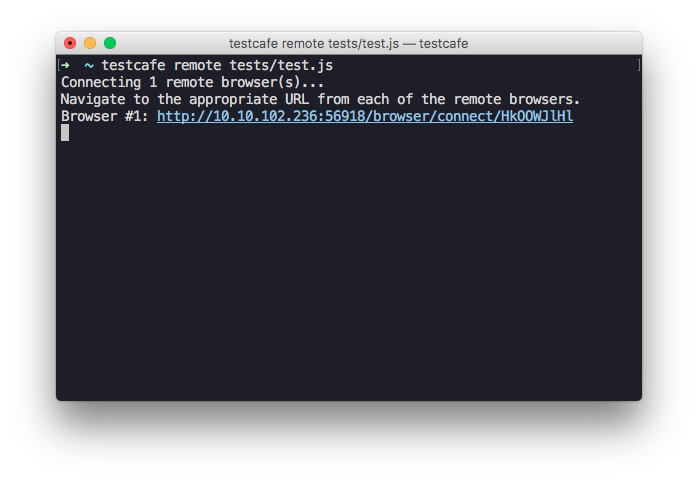
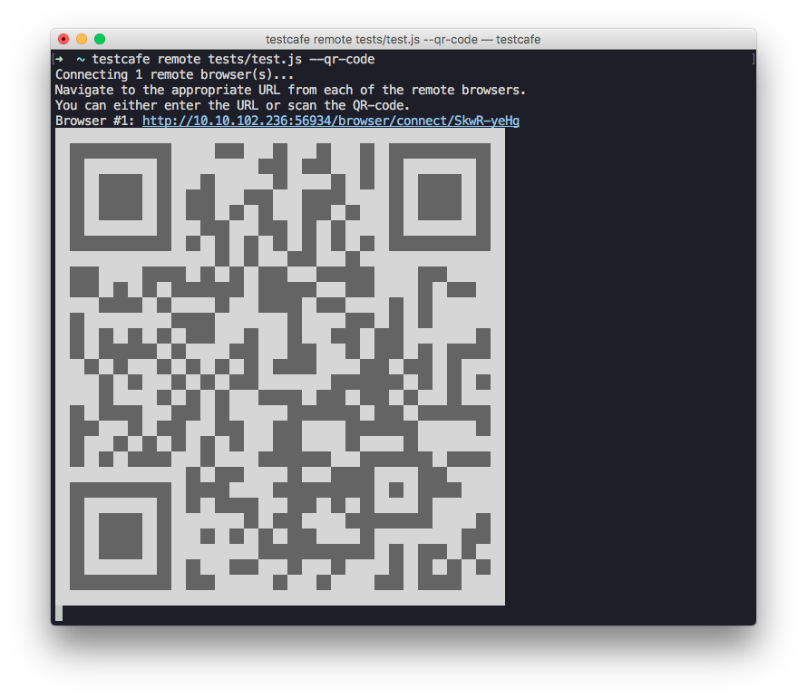

Testing on Remote Computers and Mobile Devices
TestCafe allows you to run tests on any device that has network access to the machine where TestCafe is installed.
This guide demonstrates how to test on a remote computer and a mobile device. It assumes that TestCafe is already installed in your project and you have created some tests.
Run Tests on a Remote Computer #
Open the console and type a command to run tests. Use remote as a browser alias to specify that tests should run on a remote machine.
testcafe remote tests/test.jsTestCafe prepares a URL for the remote browser to connect to the server.

Go to a remote computer that has network access to the machine with TestCafe. Open the browser in which you want to test and navigate to the URL generated by TestCafe. Testing will start automatically.
Run Tests on a Mobile Device #
Open the console and type a command to run tests with remote as a browser alias. Add the
--qr-codeflag to generate a QR-code for the mobile device.testcafe remote tests/test.js --qr-codeTestCafe will output the QR-code to the console.

Scan the QR-code with a mobile device that has network access to the TestCafe machine and open the link. TestCafe will start tests in the mobile browser.
Something #webdriver can’t do... #testcafe pic.twitter.com/bgD8cgUwXX
— TestCafe (@DXTestCafe) December 1, 2016